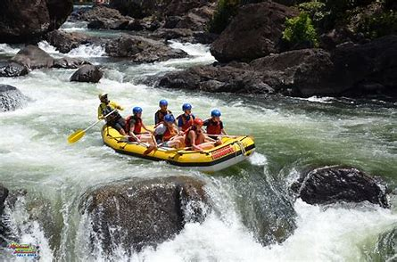
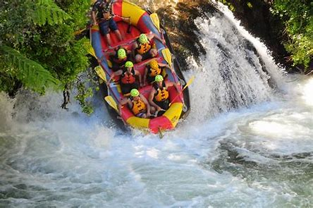
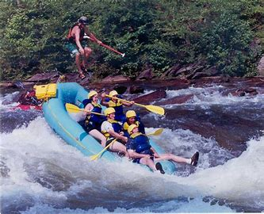

How serious can White Water Rafting get?
White Water Rafting can get pretty serious but there are no two rivers that are the same. So, if you don't want to go on a river that seems too much to handle, then you don't have to. There are plenty of other rivers availbale and to choose from.

Does the raft ever flip?
In rare situations the raft could flip. However, you are with trained professionals who know how to keep everyone safe. There are also lessons at the beginning of each session so new rafters can learn how to safely operate the raft in dangerous situations.